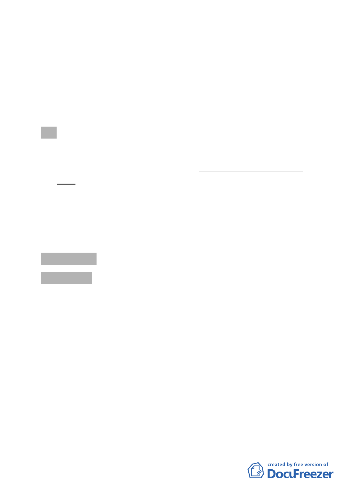

臺北市都市計畫委員會第 616 次委員會議紀錄
時間：中華民國 99 年 9 月 8 日（星期三）下午 2 時
地點：市政大樓 8 樓西南區本會委員會議室
主席：林兼主任委員建元
彙整：胡方瓊
出席委員：(詳簽到表)
列席單位人員：(詳簽到表)
壹、宣讀第 614 次委員會會議紀錄及依決議需說明事項辦理情形：
紀錄內容除「臨時提案二」因更新處尚未前往當地召開有關權
益變更與調整之說明會，其決議二刪除部分文字改修正為：「本
案比照討論事項十二之處理方式，於本次會議紀錄宣讀確認
前，如有其他權利關係人提出異議，則須再提報本會討論」，
其餘無修正事項，予以確定。至於討論事項十二，因更新處於
本（616）次委員會議中回應「無其他申請者提出包括本案範
圍內公有土地的不同更新單元劃定範圍申請」，故本案更新單
元劃定範圍照案通過。
貳、討論事項
討論事項 一
案名：變更臺北市中華路二段（愛國西路至汀洲路）兩側住宅區
為商業區主要計畫案
案情概要說明：
一、 本計畫區係以中華路二段(愛國西路至汀洲路)及其兩側進深
30公尺或第一街廓為範圍。
二、 計畫緣起與目的：
中華路為本市中正、萬華二行政區之界線道路，中華路
二段（愛國西路至汀州路一段）除東側醫院用地（市立聯合
醫院和平院區）及西側鐵路用地、國中用地（龍山國中）外，
其餘皆屬住宅區，沿街商業活動以旅館業、一般零售業、日
常用品零售業、飲食業、服務業為主。
鑑於與該路段相連接之中華路一段及艋舺大道兩側已
-1-